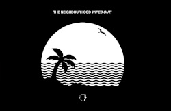

Uma que adoro bastante é a Cry Baby de The Neighbourhood, escute-a.

Ela faz parte do albúm Wiped Out!, que por sinal amo quase todas as músicas desse album.
Também gosto bastante de The Beach e Daddy Issues, que ambos estão no mesmo albúm.